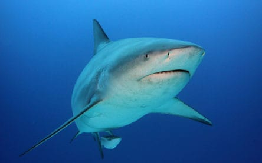
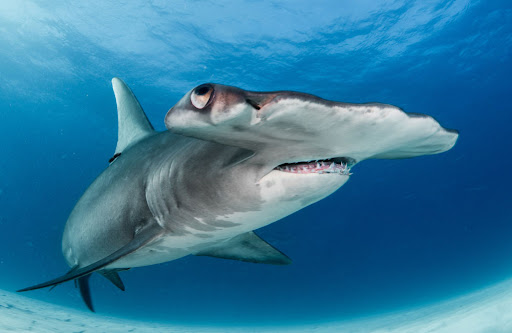
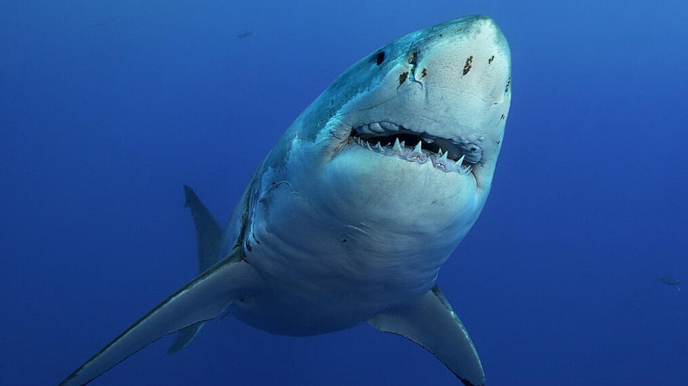
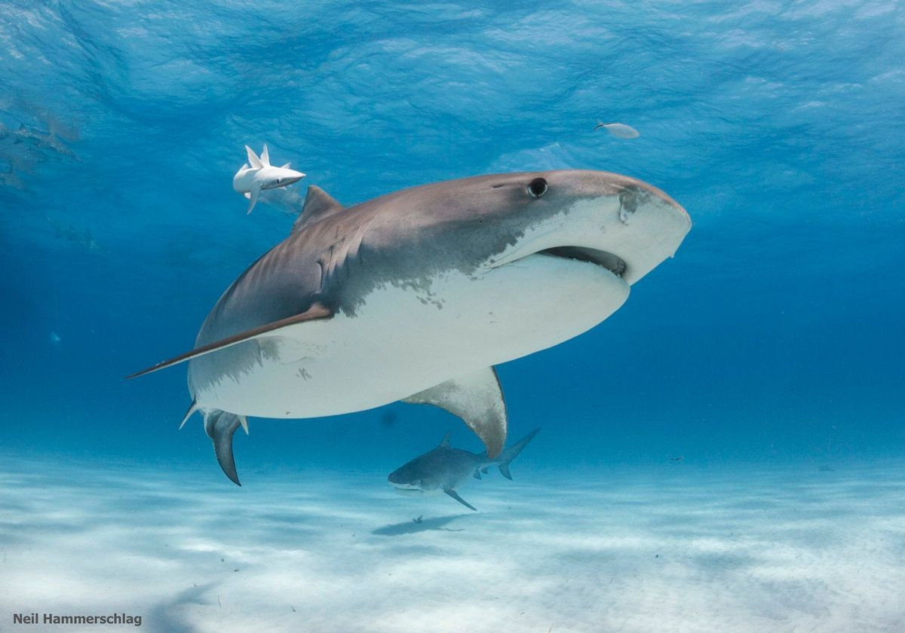

Types of Sharks




| The bull shark (Carcharhinus leucas), also known as the "Zambezi shark" (informally "zambi") in Africa, and "Lake Nicaragua shark" in Nicaragua, is a requiem shark commonly found worldwide in warm, shallow waters along coasts and in rivers. It is known for its aggressive nature, and presence in warm, shallow brackish and freshwater systems including estuaries and rivers. Bull sharks can thrive in both salt and fresh water and can travel far up rivers. They have been known to travel up the Mississippi River as far as Alton, Illinois, about 700 miles (1100 km) from the ocean. However, few freshwater human-shark interactions have been recorded. Larger-sized bull sharks are probably responsible for the majority of near-shore shark attacks, including many bites attributed to other species. | The hammerhead sharks are a group of sharks that form the family Sphyrnidae, so named for the unusual and distinctive structure of their heads, which are flattened and laterally extended into a "hammer" shape called a cephalofoil. Most hammerhead species are placed in the genus Sphyrna, while the winghead shark is placed in its own genus, Eusphyra. Many, but not necessarily mutually exclusive, functions have been postulated for the cephalofoil, including sensory reception, manoeuvering, and prey manipulation. The cephalofoil gives the shark superior binocular vision and depth perception. Hammerheads are found worldwide in warmer waters along coastlines and continental shelves. Unlike most sharks, some hammerhead species usually swim in schools during the day, becoming solitary hunters at night. Some of these schools can be found near Malpelo Island in Colombia, the Galápagos Islands in Ecuador, Cocos Island off Costa Rica, near Molokai in Hawaii, and off southern and eastern Africa. |
| The great white shark (Carcharodon carcharias), also known as the white shark, white pointer, or simply great white, is a species of large mackerel shark which can be found in the coastal surface waters of all the major oceans. It is notable for its size, with larger female individuals growing to 6.1 m (20 ft) in length and 1,905–2,268 kg (4,200–5,000 lb) in weight at maturity. However, most are smaller; males measure 3.4 to 4.0 m (11 to 13 ft), and females measure 4.6 to 4.9 m (15 to 16 ft) on average. According to a 2014 study, the lifespan of great white sharks is estimated to be as long as 70 years or more, well above previous estimates,making it one of the longest lived cartilaginous fishes currently known. According to the same study, male great white sharks take 26 years to reach sexual maturity, while the females take 33 years to be ready to produce offspring. Great white sharks can swim at speeds of 25 km/hr (16 mph)for short bursts and to depths of 1,200 m (3,900 ft). | The tiger shark (Galeocerdo cuvier) is a species of requiem shark and the only extant member of the genus Galeocerdo. It is a large macropredator, capable of attaining a length over 5 m (16 ft 5 in). Populations are found in many tropical and temperate waters, especially around central Pacific islands. Its name derives from the dark stripes down its body, which resemble a tiger's pattern, but fade as the shark matures. The tiger shark is a solitary, mostly nocturnal hunter. It is notable for having the widest food spectrum of all sharks, with a range of prey that includes crustaceans, fish, seals, birds, squid, turtles, sea snakes, dolphins, and even other smaller sharks. It also has a reputation as a "garbage eater" consuming a variety of inedible, man-made objects that linger in its stomach. Though apex predators, tiger sharks are sometimes taken as prey by groups of killer whales. It is considered a near threatened species due to finning and fishing by humans. The tiger shark is second only to the great white in recorded fatal attacks on humans, but these events are still exceedingly rare. |